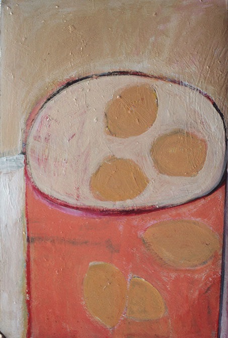
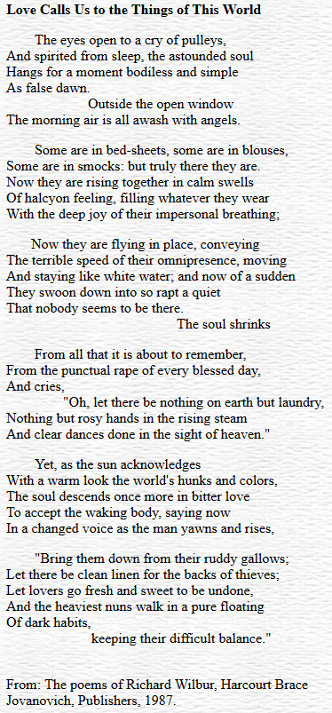

In Remembrance of Martha
[Read at the memorial service in Auburn on November 23, 1997]
Martha. Martha Carruth Ward.
I used to see her walk by the house, alone with her thoughts and her sense of the day. Or I would open the front door to find she had come by to visit. It might be a while before she would say, “well I really need to be leaving.” Being in a room with her was a great privilege. Martha’s wit and urbanity, her unblinking lucidity, her gift for compassion remain in my memory of her.
What I want to say next has to do with one of her paintings. I have had the painting for four or five years now. Although it has its own title and subject, I got into the habit of calling it “Martha’s Fried Eggs.” Let me give you a rough description of

“Martha’s Fried Eggs.” Three unevenly ovaled yellow yolks are on what must be a wobbly plate, or to describe this aspect another way, we have a remarkably unusual egg, having a white with three yolks. In either case, the yolks are attached to something earthly. Three more yolks are off on their own in space, hovering high overhead, in a celestial conviviality. For me, this painting continues to evoke Martha’s enduring presence.
I would like to read a poem by Richard Wilbur, not an elegy or some other poem of bereavement, but an epiphanal poem of sorts, bordering on the visionary yet counterpoised in actuality. The poem is entitled “Love Calls Us to the Things of This World.” The title comes from St. Augustine’s commentary on the Psalms. In the poem, the speaker, a man awakening, hears the sound of pulleys controlling clotheslines outside, and, drowsily seeing the flapping white shapes on the line, he imagines they are angels.
